Projeto arquitetônico
- Estudo preliminar
- Anteprojeto
- Compatibilização
- Projeto legal
- Projeto executivo
- Gerenciamento de projetos complementares
Wellerson Pessotto WhatsApp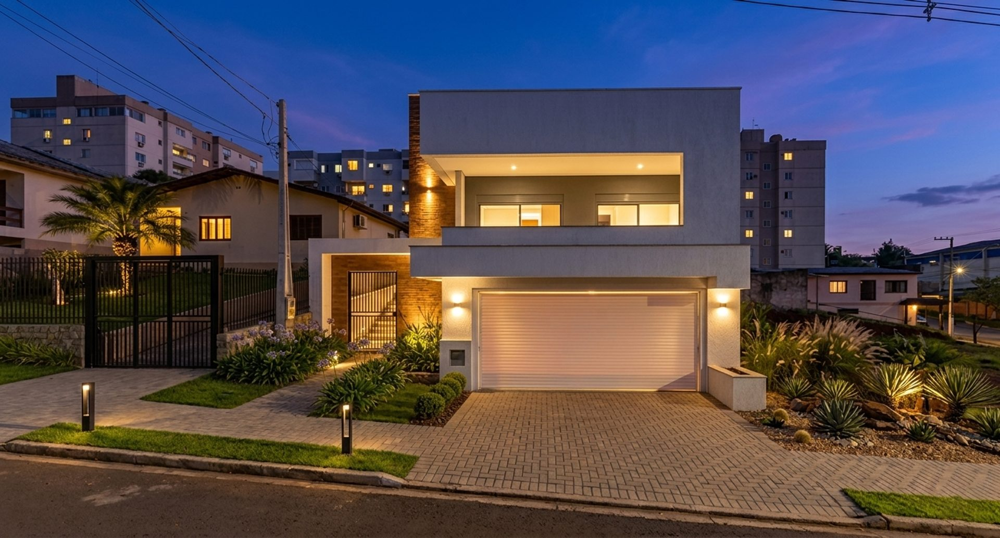
Arquitetura · Interiores · Urbanismo
Projetos pensados para transformar ideias em espaços reais. Mais do que desenhar plantas, entrego soluções que unem estética, técnica e propósito, criando ambientes que refletem a forma como cada pessoa realmente vive.
Quem somos
A arte de concretizar ideias, decodificar anseios, transportá-los para o papel e torná-los palpáveis é o que move nosso trabalho. Do traço à edificação; do imaginário ao concreto; dar forma ao sonho.
Unimos sensibilidade e técnica para transformar ideias em espaços que refletem quem cada cliente é. Nossa equipe conecta arquitetura e engenharia com propósito, criando projetos que equilibram estética, funcionalidade e emoção.
Acreditamos que cada detalhe é uma oportunidade de traduzir identidade, e é isso que nos move.
Escutamos antes de desenhar. Cada projeto nasce do diálogo com o cliente, respeitando suas necessidades e sonhos.
Cuidamos de todas as etapas, do projeto ao gerenciamento técnico, para garantir segurança e comodidade.
Trabalhamos com tecnologia BIM, assegurando precisão, economia e agilidade na execução.
Inovação, ética e colaboração são pilares do nosso trabalho. Buscamos excelência em cada entrega, aliando sustentabilidade, tecnologia e responsabilidade. Mais do que construir, queremos criar espaços que inspirem e façam sentido para quem os vive.
Projetos selecionados
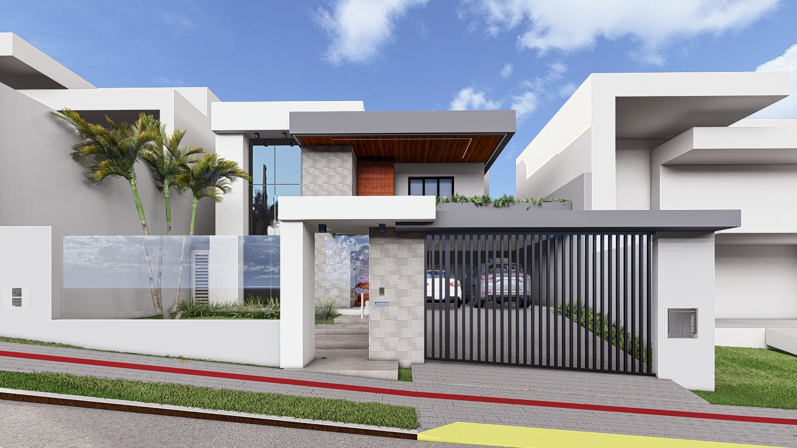
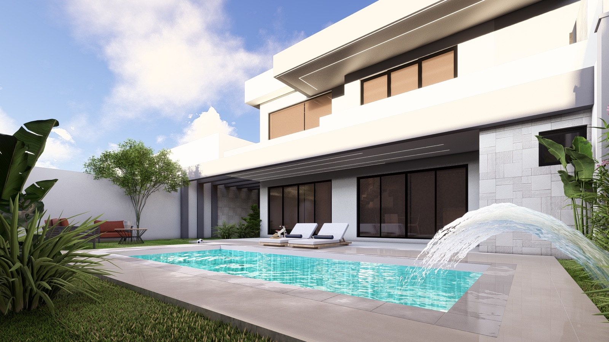
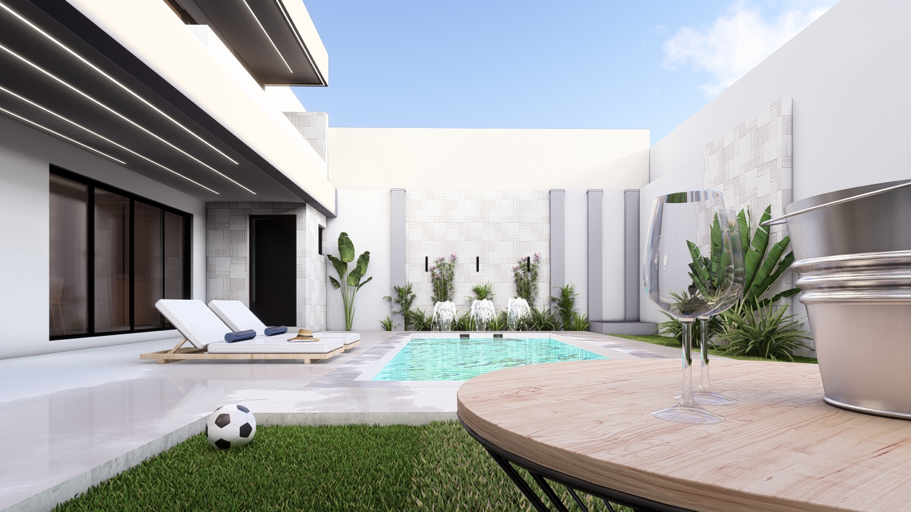
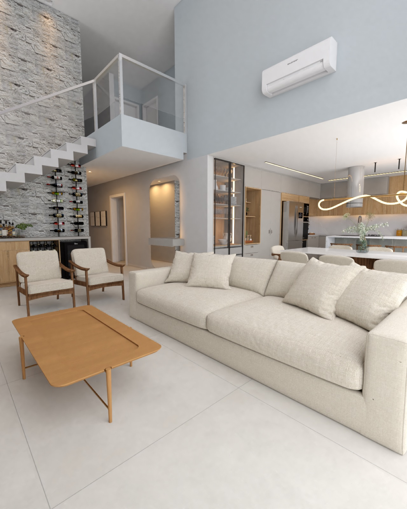
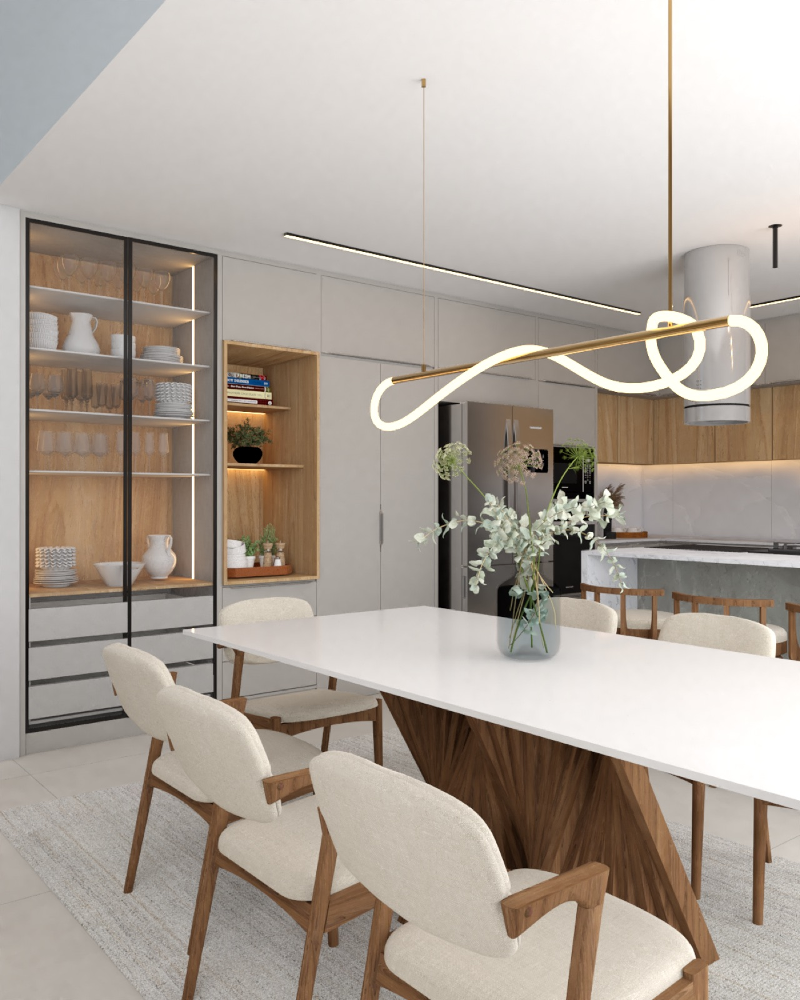
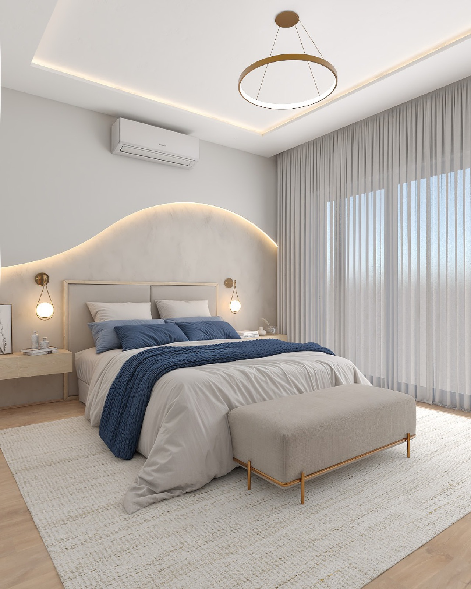
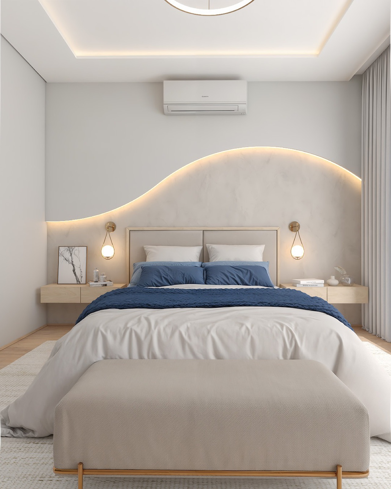
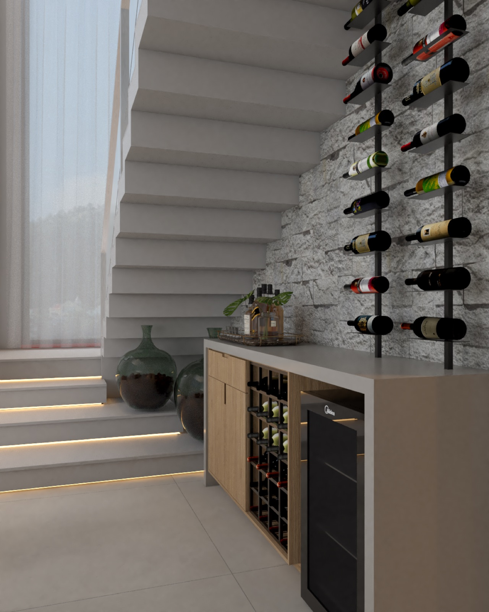
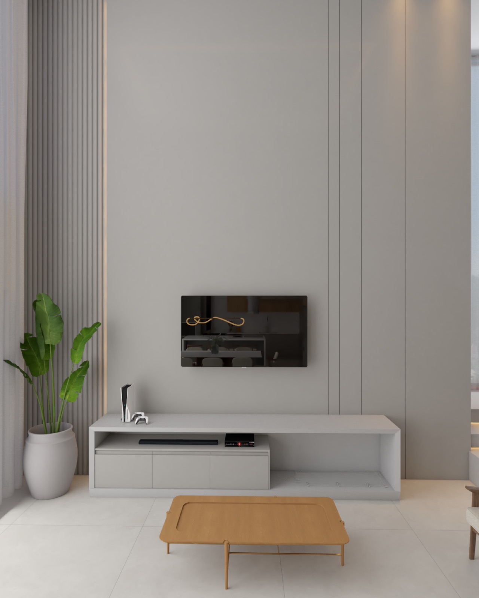
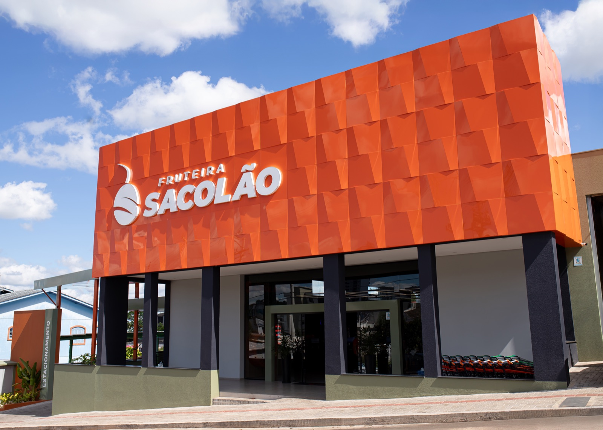
Como trabalhamos
De um modo geral, são os serviços que contemplam os projetos arquitetônico e de interiores, personalizados para cada cliente ou demanda.
O arquiteto
Arquiteto e urbanista dedicado a transformar ideias em espaços que fazem as pessoas se apaixonarem por onde vivem. Ao longo de mais de oito anos de atuação, reuniu experiência em projetos residenciais, comerciais e institucionais, sempre unindo sensibilidade, técnica e propósito.
Mestre em Arquitetura, Urbanismo e Paisagismo, é docente de ensino superior no curso de Arquitetura e Urbanismo da URI, além de especialista em Design de Interiores, Conforto Ambiental e BIM. Sua trajetória é marcada pela busca constante por inovação e excelência.
Sua atuação já foi reconhecida em eventos acadêmicos e programas de valorização profissional, reforçando seu compromisso em criar arquitetura que inspira, acolhe e traduz a identidade de quem a vive.
Serviços
Para quem vai construir o lugar onde quer viver. Projetos que unem técnica e emoção, transformando terreno, luz e rotina em arquitetura que traduz identidade. Da implantação ao projeto executivo, cada detalhe é pensado para criar espaços que inspiram e acolhem.
Falar sobre construirPara quem já tem o imóvel e quer transformá-lo em um espaço único. Layout, marcenaria, iluminação e acabamentos se unem para criar ambientes que traduzem estilo e bem-estar. Cada projeto reflete o modo de viver de quem o habita, com harmonia e personalidade.
Falar sobre reformarPara quem quer que o espaço trabalhe a favor da marca. Projetos para lojas, clínicas e escritórios, com foco em funcionalidade, estética e comunicação visual. Cada ambiente é planejado para fortalecer a experiência do cliente e refletir os valores do negócio.
Falar sobre meu negócioPara quem busca arquitetura que representa propósito. Projetos voltados a instituições, empresas e espaços públicos, com soluções que equilibram eficiência, conforto e impacto visual. Ambientes que estimulam convivência, produtividade e pertencimento.
Falar sobre um projetoContato
Responder leva pouco. Descreva o terreno ou o imóvel, o que você imagina e o prazo. A partir daí marcamos uma conversa.